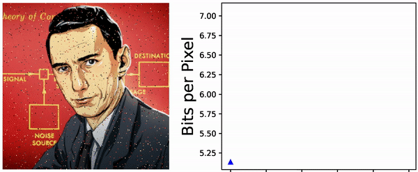
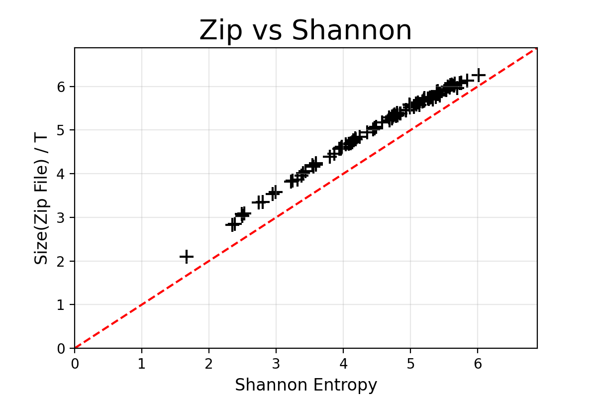
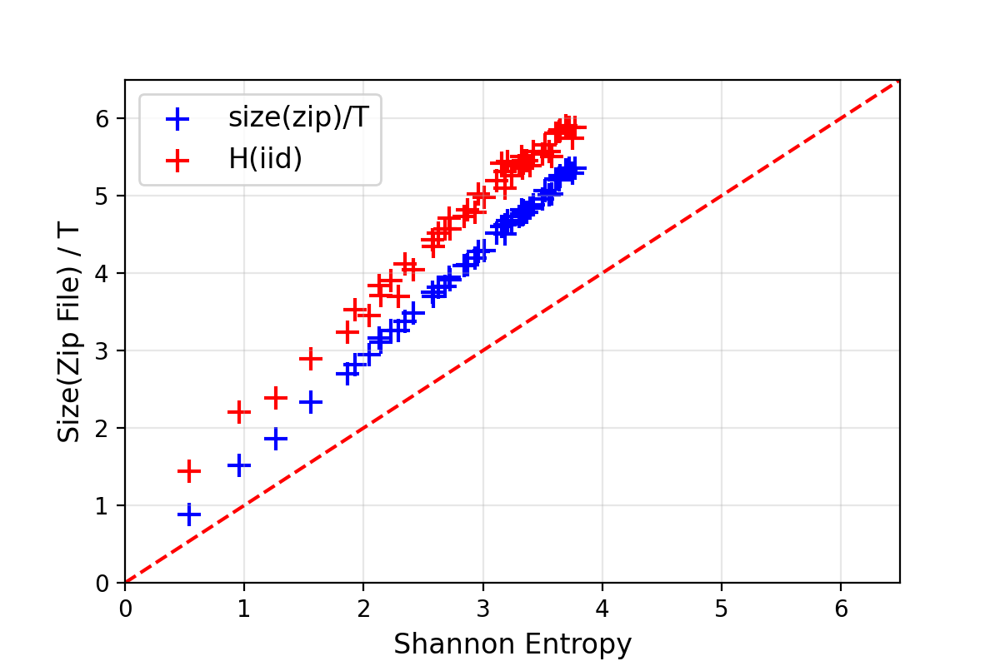
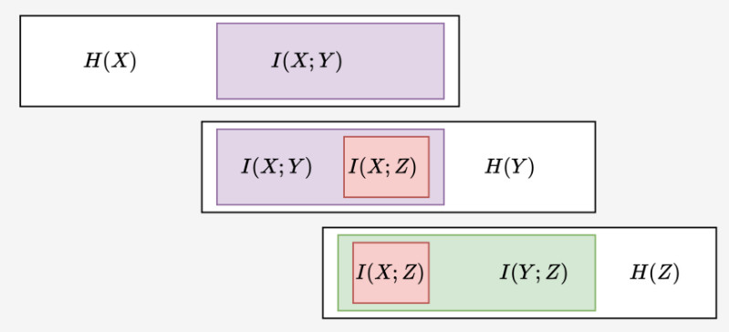

Shannon Entropy & Compression
If Alice chooses a number \(X\) uniformly at random from the set \(\{1,2, \ldots, N\}\), Bob can use a simple “dichotomy” strategy to ask Alice \(\log_2(N)\) binary Yes/No questions and correctly identify the number. This result can be generalized to non-uniform distributions (cf. Huffman codes, and also Kraft-McMillan inequality). If Alice chooses a number \(X\) from \(\{1,2, \ldots, N\}\) with probabilities \(\mathbb{P}(X=k) = p_k\), Bob can design a deterministic strategy to find the answer using, on average, about
\[ H(X) = - \sum_{k=1}^N p_k \, \log_2(p_k) \tag{1}\]
binary questions, ie. bits. To be more precise, there are strategies that require at most \(H(X) + 1\) questions on average, and none that can require less than \(H(X)\). Note that applying this remark to an iid sequence \(X_{1:T} = (X_1, \ldots, X_T)\) and using the the fact that \(H(X_1, \ldots, X_T) = T \, H(X)\), this shows that one can exactly determining the sequence \(X_{1:T}\) with at most \(T \, H(X) + 1\) binary questions on average. The quantity \(H(X)\) defined in Equation 1, known as the Shannon Entropy of the distribution \((p_1, \ldots, p_N)\), also implies that there are strategies that can encode each integer \(1 \leq x \leq N\) as a binary string of length \(L(x)\) (i.e. with \(L(x)\) bits), with the expected length \(\mathbb{E}[L(X)]\) approximately equal to \(H(X)\). It is because a sequence of binary questions can be thought of as a binary tree, etc…
This remark can be used for compression. Imagine a very long sequence \((X_1, \ldots, X_T)\) of iid samples from \(X\). Encoding each \(X_i\) with \(L(X_i)\) bits, one should be able to encode the resulting sequence with
\[ L(X_1) + \ldots + L(X_T) \approx T \, \mathbb{E}[L(X)] \approx T \cdot H(X) \]
bits. Can the usual zip compression algorithm do this? To test this, choose a probability distribution on \(\{1, \ldots, N\}\), generate an iid sequence of length \(T \gg 1\), compress this using the \(\texttt{gzip}(\ldots)\) command, and finally look at the size of the resulting file (in bits). I have done that a few times, with a few different values of \(16 \leq N \leq 256\) and a few random distributions on \(\{1, \ldots, N\}\), and with \(T = 10^6\). The plot of size of the compressed files versus the Shannon entropy \(H\) looks as below:

Seems like the zip-algorithm works almost optimally for compressing iid sequences.
Sequence of random variables
Now consider a pair of discrete random variables \((X,Y)\). If Alice draws samples from this pair of rvs, one can ask \(H(X,Y)\) binary questions on average to exactly find out these values. To do that, one can ask \(H(X)\) questions to estimate \(X\), and once \(X=x\) is estimated, one can then ask about \(H(Y|X=x) = -\sum_y \mathbb{P}(Y=y|X=x) \, \log_2(\mathbb{P}(Y=y|X=x))\) to estimate \(Y\). This strategy requires on average \(H(X) + \sum_x \mathbb{P}(X=x) \, H(Y|X=x)\) binary questions and is actually optimal, showing that
\[ H(X,Y) = H(X) + H(Y | X) \tag{2}\]
where we have defined \(H(Y | X) = \sum_x \mathbb{P}(X=x) \, H(Y|X=x)\).
Indeed, one can generalize these concepts to more than two random variables. Iterating Equation 2 shows that the trajectory \(X_{1:T} \equiv (X_1, \ldots, X_N)\) of a stationary ergodic Markov chain can be estimated on average with \(H(X_{1:T})\) binary questions where
\[ \begin{align} H(X_{1:T}) &= H(X_1) + H(X_2|X_1) + \ldots + H(X_{T} | X_{t-1})\\ &\approx T \, H(X_{k+1} | X_k)\\ &= - T \, \sum_x \pi(x) \, \sum_{y} p(x \to y) \, \log_2[p(x \to y)]. \end{align} \]
Here, \(\pi(dx)\) is the equilibrium distribution of the Markov chain and \(p(x \to y)\) are the transition probabilities.
Can \(\texttt{gzip}(\ldots)\) compress Markovian trajectories and roughly achieve that level of compression? Indeed, one can test this by generating random Markov transition matrices (that are, with very high probability, ergodic with respect to an equilibrium distribution \(\pi\)). Doing this with trajectories of length \(10^4\) (ie. quite short because it is quite slow to) on \(\{1, \ldots, N\}\) with \(2 \leq N \leq 64\), one get the following results:

In red is the entropy estimated without using the Markovian structure and assuming that the \(X_i\) are iid samples. One can clearly see that the dependencies between successive samples are exploited for better compression. Nevertheless, the optimal compression rate given by the Shannon entropy is not reached. Indeed, \(\texttt{gzip}(\ldots)\) is not an optimal algorithm – it cannot even compress well enough the sequence \((1,2,3,1,2,3,1,2,3,\ldots)\)!
Asymptotic Equipartition Property (AEP)
The AEP is simple remark that gives a convenient way of reasoning about long sequences random variables \(X_{1:T} = (X_1, \ldots, X_T)\) with \(T \gg 1\). For example, assuming that the random variables \(X_i\) are independent and identically distributed as the random variable \(X\), the law of large numbers (LLN) gives that
\[ -\frac{1}{T} \, \log_2 p(X_{1:T}) = -\frac{1}{T} \, \sum \log_2 p(X_i) \approx H(X). \]
This means that any “typical” sequence has a probability about \(2^{-T \, H(X)}\) of occurring, which also means that there are about \(2^{T \, H(X)}\) such “typical” sequences. Indeed, one could use the LLN for Markov chains and obtain a similar statement for Markovian sequences. All this can be made rigorous with large deviation theory, for example. This also establishes the link with the “statistical physics” definition of entropy as the logarithm of the number of configurations… Set of the type
\[ A_{\varepsilon} = \left\{ x_{1:T} \; : \; \left| -\frac{1}{T} \, \log_2 p(x_{1:T}) - H(X)\right| < \varepsilon\right\} \]
are usually called typical set: for any \(\varepsilon> 0\), the probability of \(X_{1:T}\) to belongs to \(A_{\varepsilon}\) goes to one as \(T \to \infty\). For these reasons, it is often a good heuristic to think of a draw of \((X_1, \ldots, X_T)\) as a uniformly distributed on the associated typical set. For example, if \((X_1, \ldots, X_N)\) are \(N\) iid draws from a Bernoulli distribution with \(\mathbb{P}(X=1) = 1-\mathbb{P}(X=0) =p\), the set \(A \subset \{0,1\}^N\) of sequences such that \(x_1 + \ldots + x_N = Np\) has \(\binom{N}{Np} \approx 2^{N \, h_2(q)}\) elements where \(h_2(q) = -[q \, \log_2(q) + (1-q) \, \log_2(q)]\) is the entropy of a \(\text{Bern}(q)\) random variable.
Mutual information
Consider a pair of random variables \((X,Y)\). Assuming that \(X\) stores (on average) \(H(X)\) bits of useful information, how much of this information can be extracted from \(Y\)? Let us call this quantity \(I(X;Y)\) since we will see in a second that this quantity is symmetric. If \(Y\) is independent from \(X\), no useful information about \(X\) is contained in \(Y\) and \(I(X;Y) = 0\). On the contrary, if \(X=Y\), the knowledge of \(Y\) already contains all the information about \(Y\) and \(I(X;Y) = H(X) = H(Y)\). If one knows \(Y\), one needs on average \(H(X|Y)\) binary questions (ie. bits of additional information) in order to determine \(X\) certainly and recover all the information contained in \(X\). This means that the knowledge of \(Y\) already contains \(I(X;Y) = H(X) - H(X|Y)\) useful bits of information about \(X\)! This quantity is called the mutual information of the two random variable \(X\) and \(Y\), and it has the good taste of being symmetric:
\[ \begin{align} I(X;Y) &= H(X) - H(X|Y) \\ &= H(X) + H(Y) - H(X,Y). \end{align} \]
Naturally, one can define conditional version of it by setting \(I(X;Y \, |Z) = \sum_{z} \mathbb{P}(Z=z) \, I(X_z | Y_z)\) where \((X_z, Y_z)\) has the law of \((X,Z)\) conditioned on \(Z=z\). Since \(I(X;Y \,|Z)\) is the reduction in uncertainty of \(X\) due to \(Y\) when \(Z\) is given, there are indeed situations when \(I(X;Y \, | Z)\) is larger than \(I(X;Y)\) – it is to be contrasted to the intuitive inequality \(H(X|Z) \leq H(X)\), which is indeed true. A standard such examples is when \(X\) and \(Y\) are independent \(\text{Bern}(1/2)\) random variables and \(Z = X+Y\): a short computation gives that \(I(X;Y \, | Z) = 1/2\) while, indeed, \(I(X;Y) = 0\). This definition of conditional mutual information leads to a chain-rule property,
\[ I(X; (Y_1,Y_2)) = I(X;Y_1) + I(X;Y_2 | Y_1), \]
which can indeed be generalized to any number of variables. Furthermore, if the \(Y_i\) are conditionally independent given \(X\) (eg. if \(X=(X_1, \ldots, X_T)\) and \(Y_i\) only depend on \(X_i\)), then the sub-additivity of the entropy readily gives that
\[ I(X; (Y_1, \ldots, Y_N)) \leq \sum_{i=1}^N I(X; Y_i). \]
Importantly, algebra shows that \(I(X;Y)\) can also be expressed as the Kullback-Leibler divergence between the joint distribution \(\mathbb{P}_{(X,Y)}\) and the product of the marginals \(\mathbb{P}_X \otimes \mathbb{P}_Y\),
\[ I(X;Y) \; = \; D_{\text{KL}} {\left( (X,Y) \, \| \, X \otimes Y \right)} . \]
This diagram from (MacKay 2003) nicely illustrate the different fundamental quantities \(H(X)\) and \(H(X,Y)\) and \(H(Y|X)\) and \(I(X;Y)\) and \(H(X,Y)\):
Naturally, if one considers three random variables \(X \mapsto Y \mapsto Z\) forming a “Markov chain”, we have the so-called data-processing inequality,
\[ I(X;Z) \leq I(X;Y) \qquad \text{and} \qquad I(X;Z) \leq I(Y;Z). \]
The first inequality is clear since all the useful information contained in \(Z\) must be coming from \(Y\), and \(Y\) only contains \(I(X;Y)\) bits about \(X\). For the second inequality, note that if \(Z\) contains \(I(Y;Z)\) bits about \(Y\), and \(Y\) contains \(H(Y;X)\) bits about \(X\), then \(Z\) cannot contain more than \(I(Y;Z)\) bits of \(X\):
